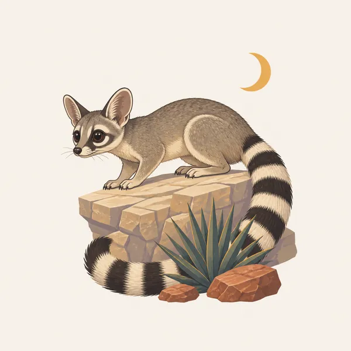
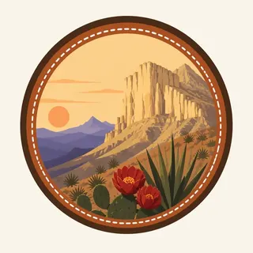

01
El Capitan
The massive rock face is what drivers see. It is the reef, exposed, not a random butte. This essay does not add a summit elevation the pages opened here do not state.
TrailMark Archive Edition
Texas | Chihuahuan Desert
El Capitan stands over the desert, the exposed face of a reef built in a Permian sea.
Archive No. TM-GUMO-021
National Park since 1972
Collection Guadalupe Reef
Park Overview
Guadalupe Mountains National Park was established in 1972. The history page marked the fiftieth anniversary of that year in the fall of 2022.
For more than 10,000 years people have moved through these mountains. NPS names the conflicts between Mescalero Apaches and Buffalo Soldiers, the Butterfield Overland Mail, and later ranching. Frijole Ranch, Williams Ranch, and the ruins of Pinery Station still hold that record.
The nature page tells the older story. In the Permian, about 265 million years ago, a tropical sea covered the region. Sponges, algae, and other lime-secreting life, plus lime from the seawater, built a reef along the shore for 400 miles. Uplift later exposed it. El Capitan is the cliff travelers see and often drive past.
Emotional Thesis
NPS describes the view from the road honestly: El Capitan looks impressive and forbidding, and the desert around it looks barren. The next sentence on that page is the correction. A short walk finds more than one life zone.
TrailMark uses the cliff as the hero, because that is the honest first sight, and then spends the essay on the reef and the ranches. The highway view is the invitation, not the inventory.
Landscape Highlights
01
The massive rock face is what drivers see. It is the reef, exposed, not a random butte. This essay does not add a summit elevation the pages opened here do not state.
02
Ocotillo and prickly pear are among the common desert plants. Other plants in the park occur nowhere else. The floor is one community, not the whole range.
03
Streamside woodlands of oaks and maples, and mountaintop forests of ponderosa pine and Douglas fir, sit above the desert. The range works as an island of habitats.
Wildlife
NPS reports more than 1,000 plant species, 60 mammal species, 289 bird species, and 55 reptile species. The extra drawing is a ring-tailed animal on a ledge at night. It is the illustration. The counts are the record.

01
Some plants here grow nowhere else in the world. That is a reason to stay on trail, not a reason to go find them.
02
The life zones change quickly: desert, rocky canyon, oak and maple along water, pine and fir on top. A species list that ignores the zone is the wrong list.
03
Seeps and springs are limited. They are why animals and ranches both stopped here. Do not treat them as taps.
Geology
After the Permian sea evaporated, sediment and mineral salts buried the reef for millions of years. Uplift exposed large pieces of it. Geologists come to study what NPS calls one of the finest ancient marine fossil reefs on Earth.
01
The builders were calcareous sponges, algae, other lime-secreting organisms, and lime from the seawater itself. The cliff is a cemetery of that reef, not a volcanic neck.
02
Wind and water cut the canyons after the stone was already a mountain. Deep, sheer-sided canyons and steep slopes are the modern shape.
03
Carlsbad Caverns is the same reef, hollowed. This park is the reef you can see without a lamp.
The high woods are a mountain climate while the basin stays a desert. Know which trail you picked. The park does not have one weather.
A clear time to read El Capitan from the road and then leave the road. Wind is part of the carving story the nature page tells.
The Chihuahuan floor is harsh. Carry water for the desert even if the map shows trees at the end of the climb.
Oaks and maples along the streams are the reason to walk into a canyon instead of only photographing the cliff.
Photography
El Capitan is the picture everyone already has. The park becomes itself when a second frame shows dunes, a ranch, or the pines.
01
The highway frame is true and incomplete. Walk far enough that the cliff is no longer the only subject.
02
If a sign gives an elevation, the photograph can repeat the sign. This essay will not invent one.
03
Frijole and Williams are not abandoned scenery. Photograph them as places with a record, and leave every object.
Field Notes
From the highway the cliff looks like the whole park, which is exactly what the highway is good at.
TrailMark Field Notes

Badge Story
The badge should read as El Capitan's wall: horizontal beds, a flat top, desert in front. A snowy granite spire would be another range.
Warm stone against a pale sky, the way the escarpment takes evening light.
Desert plants at the base so the cliff has a floor.
Distinct from Carlsbad's dark cave mouth and from a canyon in Utah.
Archive No.021
LocationWest Texas
ReleaseReef Cliff
Stewardship / Safety
Collecting cultural or historic objects is illegal here. Current trail and weather conditions are on the Park Service site. The mailing address is Salt Flat, which tells you something about the basin.
Leave artifacts at Pinery, the ranches, and anywhere else you notice them. The history page is explicit.
Carry water for desert miles. The seeps are habitat and history, not a backup bottle.
The life zones are the resource. Cutting a switchback through them is how a rare plant becomes a rumor.
El Capitan is a wall. Edges and routes change. Use the trail the park maintains, and check NPS before a long day.
Current conditions, fees, and alerts are on the National Park Service site.
Continue the Archive
Carlsbad Caverns is the underground of the same stone. White Sands is the gypsum to the west. Saguaro is a different desert, the Sonoran, with a cactus instead of a cliff.